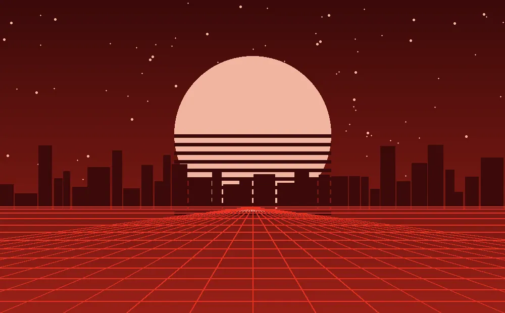
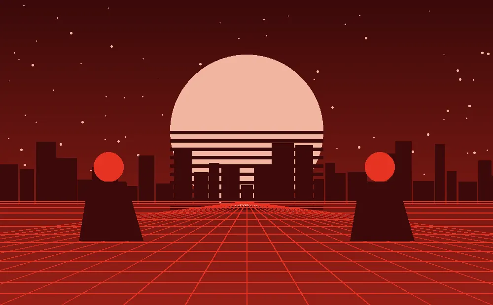
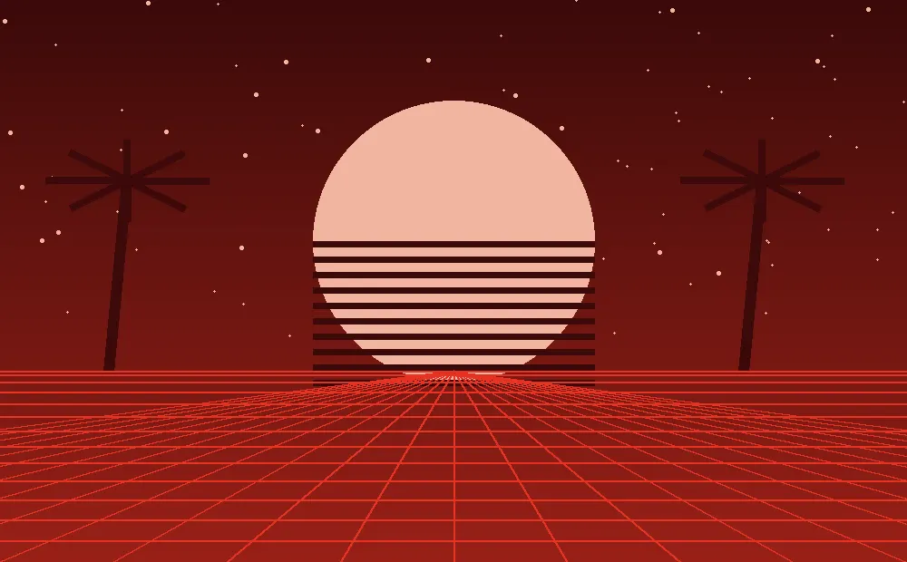
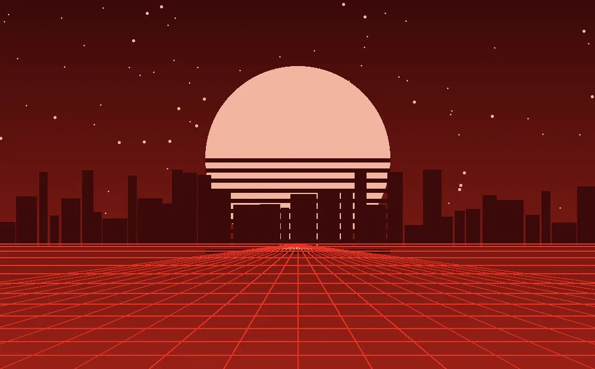

DIE IDEE DAHINTER
UNSERE STORY
Eine Idee zwischen Winterabenden, alten Kassetten und dem Wunsch, gemeinsam etwas Neues zu erleben.

Wie alles begann
Was wäre, wenn der Advent nicht mit einer stillen Kerze, sondern mit einem gemeinsamen Beat startet? Aus dieser Frage entstand die fiktive Eventidee „Tanz in den Advent“. Das Konzept spielt mit zwei scheinbaren Gegensätzen: der gemütlichen, vertrauten Weihnachtszeit und der energiegeladenen Ästhetik elektronischer Clubmusik.
In einem Designexperiment wurde daraus eine Nacht, in der die Achtzigerjahre auf moderne Jugendkultur treffen. Nicht als nostalgische Kopie, sondern als eigene kleine Welt mit klaren Farben, starken Formen und einem Sound, der zum Tanzen einlädt.
Wer steckt hinter Twister?
Ein kreatives Studienprojekt
Hinter dieser Website steht kein realer Clubveranstalter. Twister ist eine erfundene Clubmarke, die für eine Gestaltungsaufgabe entwickelt wurde. Das Event, die Programmpunkte, die Preisstufen und die Bildwelt sind Teil einer durchgängigen visuellen Idee.
Der Schwerpunkt liegt darauf, wie sich eine Jugendveranstaltung mit eigenständiger Identität präsentieren lässt: informativ, zugänglich und gleichzeitig so atmosphärisch, dass die Gestaltung selbst schon Lust auf den Abend macht.

Warum ausgerechnet Synthwave?
Synthwave verbindet elektronische Musik mit Bildwelten, die an Science-Fiction-Filme, Spielhallen und Plattencover der Achtzigerjahre erinnern. Charakteristisch sind Rasterflächen, strahlende Sonnen, harte Silhouetten und kontrastreiche Farbstimmungen. Diese Elemente werden für „Tanz in den Advent“ neu interpretiert.
Die Weihnachtsidee erscheint nicht über traditionelle Tannenbaumfotos, sondern über Licht, Sterne, warme Farbtöne und kleine winterliche Details. So entsteht eine eigene Ästhetik, die sich vom typischen Weihnachtsmarkt-Look unterscheidet.
Was wir mit der Idee zeigen wollen
Die Website soll Orientierung geben und zugleich eine Stimmung vermitteln. Jede Unterseite erzählt einen anderen Teil der Geschichte: Die Startseite macht neugierig, das Programm zeigt den Ablauf, die Ticketseite bündelt wichtige Angaben und die Infoseite beantwortet praktische Fragen. Gemeinsam bilden sie einen vollständigen, fiktiven Eventauftritt.

Wichtig ist uns außerdem, die Altersregeln nicht im Kleingedruckten zu verstecken. Gerade bei einem Angebot für jüngere Gäste gehören transparente Informationen zum Konzept dazu.
Unsere imaginäre Stadt
Die Skyline ist eines der wiederkehrenden Motive unserer Gestaltung und verbindet alle Seiten visuell miteinander.
